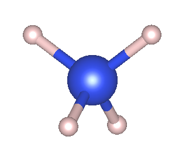

Tutorial 1: Simple ONETEP Calculations¶
Version: all versions Nicholas D.M. Hine; Chris-Kriton Skylaris
Input files¶
Setting up a ONETEP job involves creating a main input file with the
suffix .dat (e.g., your_system.dat) which contains all the required information to
describe both the system and the parameters of the job.
This requires the user to provide input in the form of keywords and blocks. Keywords are written in the form:
1 | |
1 | |
Note
Capitalisation in the input file is irrelevant.
If we wish to specify a cutoff energy of 500 eV for our standard grid, we would add:
1 | |
 ONETEP keyowrd database.
ONETEP keyowrd database.
Blocks are used to define the values of input parameters which need to contain multiple records, such as the definition of the unit cell. They take the form:
1 2 3 4 5 | |
#or! characters. Anything after
these characters on a given line will be ignored.
Setting up the Input File¶
We will start by running a simple job on a silane molecule SiH\(_4\). Create a working directory in which to run ONETEP:
1 2 | |
1 | |
1 | |
The first thing is to specify the simulation cell.
The simplest choice is a cubic box with sides of about 40.0 Bohr.
Enter the 3-component cell vectors, one per line, between the %block
lattice_cart and %endblock lattice_cart keywords.
1 2 3 4 5 | |
Second, the atomic species need to be specified, in this case silicon
and hydrogen.
This information needs to be provided between %block species and
%endblock species keywords.
In this block, we need to specify five pieces of information per
species, separated by spaces (click on the + button to see the meaning
of each piece):
1 2 3 4 5 | |
- Your symbol for the atomic species (this can be the same as the element symbol)
- The element symbol itself
- The atomic number Z
- The number of NGWFs per atom
- The NGWF radius.
The number of NGWFs required can usually be judged from the symmetry of the atomic orbitals involved: In this case four for silicon and one for hydrogen will be adequate (can you think why?). For this molecule, 6.0 Bohr should be a reasonable starting point for the NGWF radii.
Each atomic species in our calculation needs a pseudopotential file.
The pseudopotential files are specified between %block species_pot and
%endblock species_pot keywords. You can use the hydrogen.recpot and
silicon.recpot files from the ONETEP pseudopotentials pseudo
directory. Copy them to your working directory now (or make a symbolic
link using ln -s source destination).
1 2 3 4 | |
- Remember to change
PATH/TOto the correct path to your potential files.
Next, we need to specify the atomic positions, between %block
positions_abs and %endblock positions_abs keywords.
There is one line per atom. Remember to use your symbol for the atomic
species as defined in the species block. The coordinates are assumed
to be given in Bohr unless specified otherwise. While it is not
requirement in ONETEP that all the atoms should lie within the
simulation cell, it is best (for visualisation purposes) to start by
placing the silicon atom at the centre of the cell. For SiH4, we can write:
1 2 3 4 5 6 7 | |

The last essential parameter to specify is the kinetic energy cutoff parameter for the PSINC basis set. A reasonable value to start with is 300 eV. Use the cutoff_energy keyword and remember to specify the energy unit as well as the value.
1 | |
Running the Job¶
Assuming the executable of ONETEP is located at ~/ONETEP/bin/onetep, we can now run our job with:
1 | |
Convergence¶
Just as in any form of traditional DFT, we must ensure that our calculation results are converged with respect to the size of the basis. In ONETEP, convergence with basis size is controlled by a small number of parameters, with respect to which the total energy is variational. In this context, that means the total energy at a given value of the parameter will be an upper bound to the true, converged total energy, and increasing the parameter will monotonically decrease the total energy, which asymptotically tends to its converged value.
Cutoff Energy¶
The first parameter will be familiar to anyone who has carried out
plane-wave DFT calculations: the cutoff energy. This specifies the
kinetic energy of the maximum G-vector of the reciprocal-space grid,
and therefore the spacing of the real-space grid. With a 40 Bohr cell
and a 300eV cutoff, ONETEP will have chosen a 48\(\times\)48\(\times\)48 grid, hence
a grid spacing of 0.833 Bohr. This may be too coarse: move your old
output file to a new name (e.g., SiH4.out_Ec300) and try changing the
cutoff energy to 500eV, then re-run the job script. You may wish to
add output_detail: VERBOSE to your input file, to see exactly what
grids are being used at each cutoff.
Comparing the two outputs, you should see that the total energy has decreased by around 0.03Eh (nearly 1eV, or 0.2 eV/atom). This suggests 300 eV was too low initially. Try increasing the cutoff in steps of 100 eV (You may wish to automate this, by having a loop in your job script in which the input file is updated and the job run for each update, if you are sufficiently familiar with bash scripting)
Plot the total energy (\(E_T\)) as a function of cutoff energy. You should see a monotonic decrease in ET as a function of \(E_{cut}\): try to evaluate at what value you think the total energy is converged to about 0.1 eV/atom of its asymptotic limit. Note that the calculation time increases rapidly with cutoff energy, because the number of grid points in each FFTbox is growing rapidly with cutoff energy, and thus each FFT takes longer, so do not try going beyond around 1200 eV.
In few cases in reality do we require strict convergence of the total energy. It is more usual that we require convergence of some measurable quantity such as a binding energy, which is based on energy differences. In that case, we do not require the total energy to be converged, only the difference between total energies of very similar systems. This may converge much faster than the total energy itself, presuming the same species are present in both systems. Always consider what it is that you need converging before you start running enormous calculations!
NGWF radius¶
Next, we will investigate convergence with respect to the NGWF radius. Pick a value of cutoff energy for which you can perform reasonably fast calculations (say, 500.0 eV) and try increasing the NGWF radius from 6.0 to 10.0 in 1.0 Bohr steps. Plot the total energy against NGWF radius. Again, you should see a monotonic decrease. Note that above 6.0 Bohr the FFT box is as large as the simulation cell, in a larger cell this would keep growing, and the calculation time would increase rapidly. Also, you should notice that the number of NGWF Conjugate Gradients iterations grows with the size of the localisation region, this is natural since with larger spheres there are more NGWF coefficients to simultaneously optimise. You may also wish to try converging with respect to the number of NGWFs per atom (eg try 9 NGWFs on the Silicon). In some systems, notably crystalline solids, this can be crucial to achieving good convergence of the NGWFs themselves.
TODO
- add example script to do this.
- add plots.
Kernel Cutoff¶
This SiH\(_4\) system is too small to investigate convergence with respect to the cutoff of the density kernel. In larger systems truncation of the density kernel can be a good way to speed up the calculation. Indeed, asymptotically it is only by truncating the kernel that true 'linear-scaling' behaviour of the computational effort will be observed.
The kernel cutoff is controlled by the kernel_cutoff keyword. This defaults to 1000 Bohr (i.e. effectively infinite). Density kernel truncation should be used with a degree of caution: generally speaking, one would want to be able to run a full calculation for a fairly large system first, with an infinite cutoff, to establish a known baseline. Then, try decreasing the kernel cutoff from that point and see what the effect is on the total energy, on the level of NGWF convergence (as measured by the NGWF RMS gradient), and on the computation time. If significant time savings can be achieved without trading in too much accuracy, it may be worthwhile to bring down the cutoff for all similar calculations. Proceed with care, though as calculations with a truncated kernel tend to converge in a less stable manner.
TODO
- add plots to illustrate the density matrix and the cutoff.
- add example script to do this.
- add plots for eonvergence.